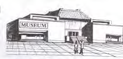

2015年北京市中考英语试题 · 阅读下列 第3篇 第49、50、51题
C

Do you enjoy visiting a museum? Did you ever make a plan before a visit? Every museum must have something that attracts you. And there are many possible ways to enjoy yourself in a museum. If you follow these steps below, you'll know what is worth seeing and doing, so that you can make the most of your time at the museum.
Decide what museum you will visit. There are so many different kinds of museums and you first need to find one that you like. It's easy for you to choose one and start an enjoyable visit!
Do some research online. Every museum now has a website which allows you to look through the information about it. On the website, you may look for such things as:
•The exhibits(展品)–See what is on show at the museum at all times, and what special exhibitions are held for a short time.
•The history of the museum –There will often be very interesting stories about the exhibits and the benefactors(捐赠者). That can make your visit more interesting.
•Activities –See whether there are talks, tours our special activities on the day when you visit. Many museums hold some activities that meet the interests of all age groups.
•Cost,food or shortage–It's important how much the visit will cost. You have to decide whether or not you can eat there. You might also need to find out transportation needs, as well as storage for coats, bags etc.
Learn at least one thing on your visit. It is always good to take away something new from your visit.
Plan breaks into your visit. When you walk around, standing here and studying exhibits there, you may become very tired. So it is important to take breaks. A break is a good opportunity for you to think of what you have seen and what else you might want to do in museum.
Take a friend or two. Visiting museums is always a lot more fun when you are with someone else. You can talk over what you’re seeing. A friend also brings another way of thinking when you talk about the exhibit.
49. According to the passage, we should first ____.
A. do some research online B. make a plan for lunch
D. decide on a museum to visit D. choose a friend to go with
50. To make our visit more interesting, we can____.
A. organize activities like special shows and talks
B. read the stories about exhibits and benefactors
C. learn about the interests of all age groups
D. walk around the museum without breaks
51.If we visit a museum with friends, we can____.
A. share the experience with them B. come up with strange ideas
C. cut down the cost of the visit D. discuss the next visit plan